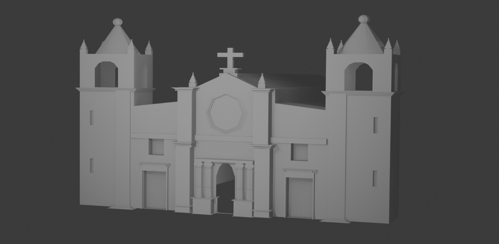
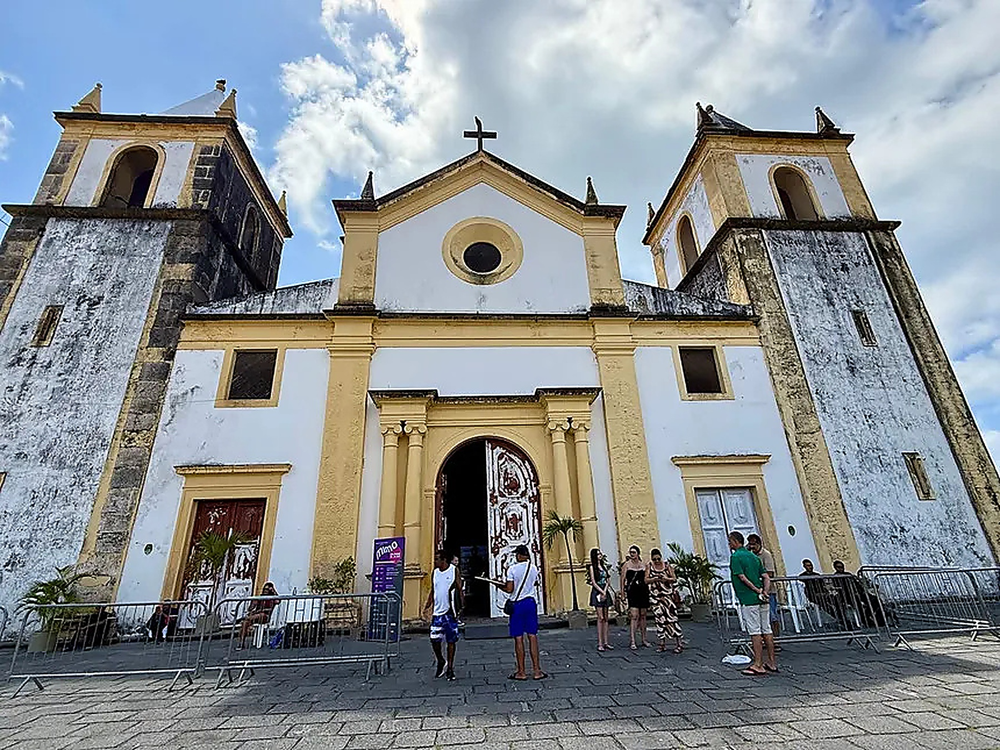
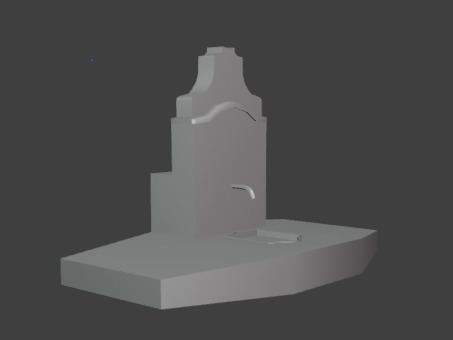
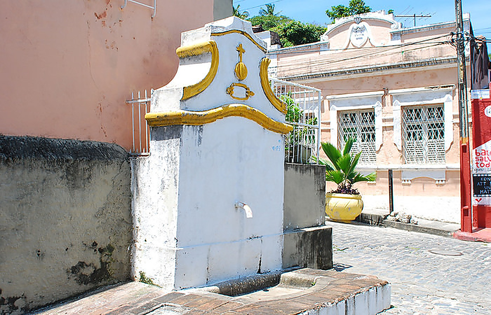

Pesquisa de campo
Observamos o lugar e reunimos fotos, medidas e referências para entender sua estrutura e história.
Criamos modelos 3D de construções e espaços para mostrar a arquitetura, a cultura e a identidade do Brasil de forma acessível, visual e detalhada.
Do registro à apresentação digital
Observamos o lugar e reunimos fotos, medidas e referências para entender sua estrutura e história.
Geramos modelos digitais para apresentar fachadas, ambientes e detalhes de forma clara e realista.
Atendemos lojas, empresas e empreendimentos que desejam mostrar seus espaços no ambiente digital.
Em projetos culturais, a pesquisa histórica ajuda a apresentar a identidade do lugar e, quando relevante, como ele era no passado.
Modelos 3D de espaços reais
Começamos por Olinda, Pernambuco, mas criamos modelos para projetos em todo o Brasil.


Modelo 3D da estrutura e da fachada da Catedral da Sé, representando seus elementos arquitetônicos.


Modelo 3D da Bica de São Pedro, com foco em sua estrutura e detalhes arquitetônicos.
As comparações apresentam fotografias e prévias ilustrativas. Substitua as prévias pelas imagens reais dos modelos 3D quando disponíveis.
Da ideia à apresentação em 3D
Entendemos o espaço, o público e o objetivo do projeto.
Coletamos fotos, medidas e referências. Quando desejado, aprofundamos a história do lugar.
Geramos o modelo digital com formas, proporções e elementos principais.
Ajustamos características visuais para representar melhor o espaço.
Entregamos os modelos para uso em apresentações, redes sociais, sites e outros formatos.
A Marco3D nasceu em Olinda, Pernambuco. O olhar para a arquitetura e a vida dos espaços faz parte da nossa origem, mas nosso trabalho vai além do patrimônio histórico: também criamos modelos 3D para espaços comerciais, empresas e empreendimentos.
Conheça maisPode ser um lugar cultural, uma loja ou uma estrutura empresarial. Conta pra gente o que você quer mostrar.
Fale com a gente